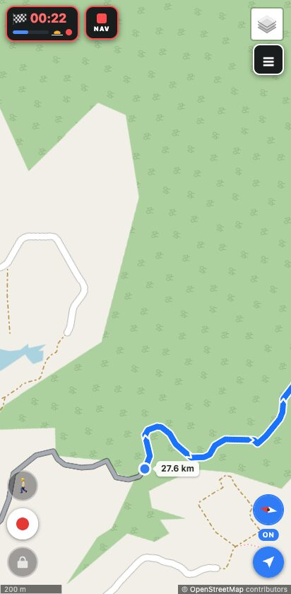
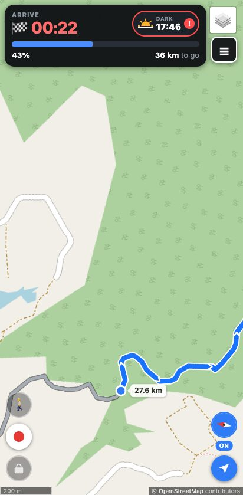
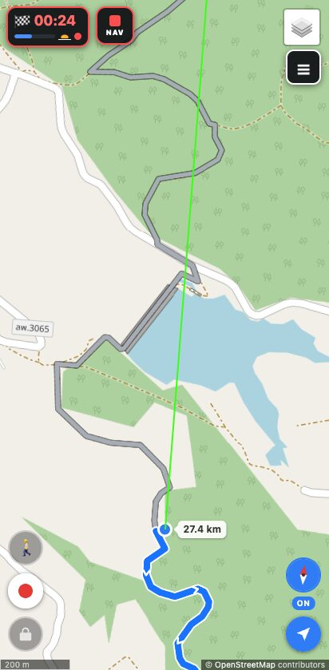
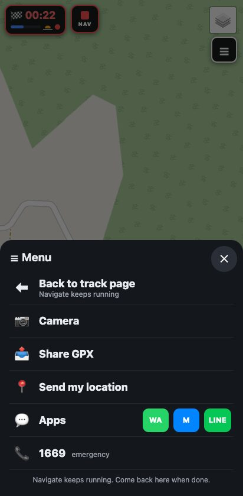
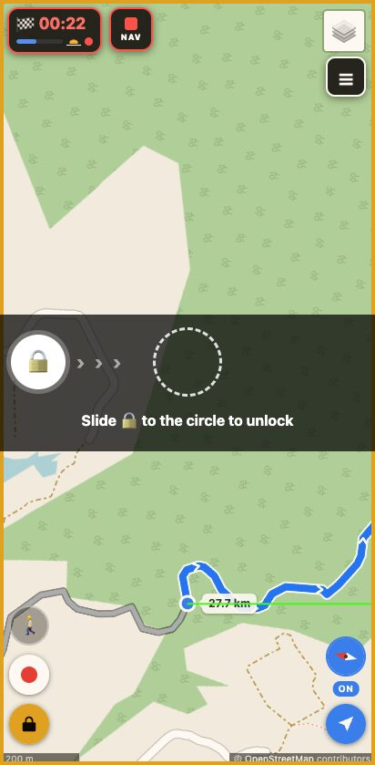
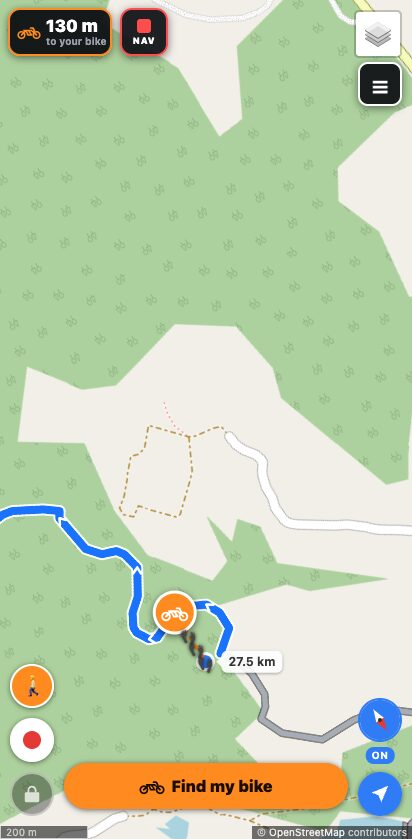

Navigate
Follow any track on your phone. No extra app.
Open a track → ▶ Navigate

Follow the blue lineBlue = still to ride, grey = done. Your dot sits low on the screen so you see more of the way ahead.

Tap the time boxArrival time, km to go, and when it gets dark.

Off the track?A line points you back to the track.

☰ MenuCamera, Share GPX, Send my location, 1669. Navigate keeps running.

🔒 Rain lockRain and gloves can't press anything. Slide 🔒 into the circle to unlock.

🚶 WalkLeft the bike to scout on foot? Find my bike walks you back.
The offline map saves by itself when you start Navigate. Start it while you still have signal. ■ NAV stops it.